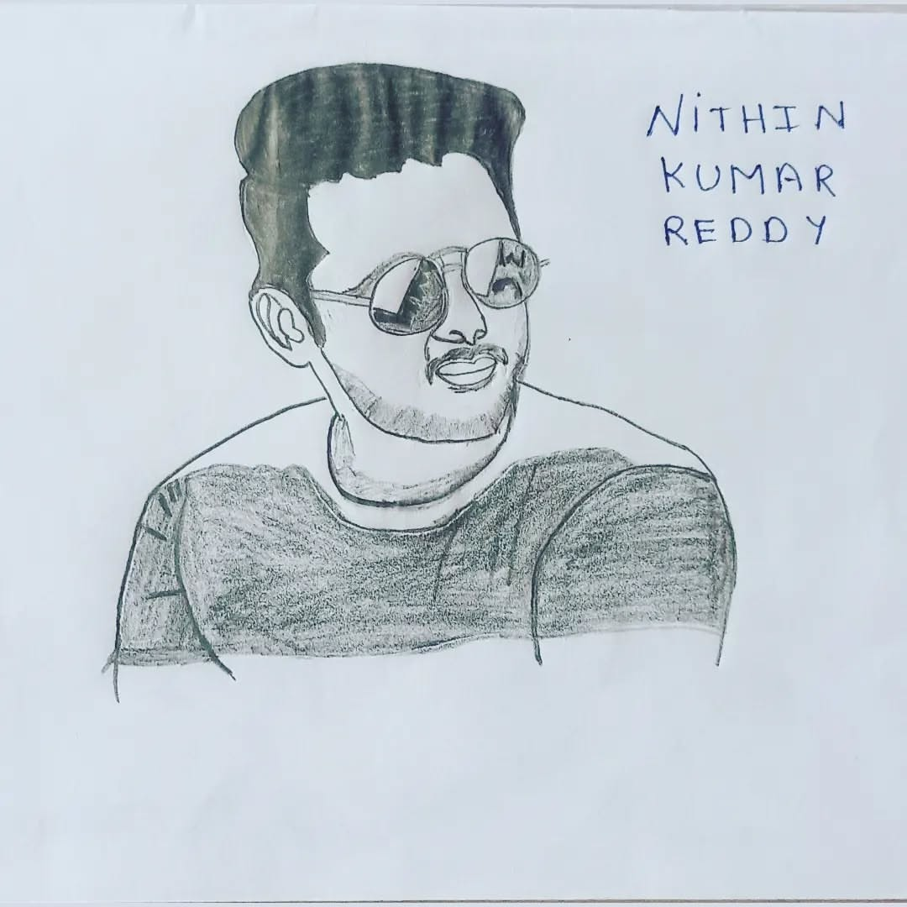

Photos



Nithin Reddy, popularly known as Nithiin, began his acting career in Telugu cinema in 2002. His debut film Jayam, directed by Teja, became an instant blockbuster, establishing him as a promising young actor. His charming screen presence and natural acting gained him critical and public appreciation right from the start.
After the success of Jayam, Nithiin acted in several films such as Dil (2003), Sye (2004), and Allari Bullodu (2005). While some were moderate successes, many of his films during this period did not perform well at the box office. Despite these setbacks, he remained a fan-favorite for his youthful roles and positive attitude.
His major comeback came with the 2012 film Ishq, co-starring Nithya Menen and directed by Vikram Kumar. The film was a critical and commercial success and marked a turning point in his career.
He followed it up with the hit romantic comedy Gunde Jaari Gallanthayyinde (2013), further strengthening his image as a romantic hero. Films like Heart Attack (2014) and Chinnadana Nee Kosam (2014) kept his popularity intact.
In 2016, he starred in the blockbuster film A Aa, directed by Trivikram Srinivas and co-starring Samantha Ruth Prabhu. This film was a huge commercial success and became one of the top-grossing Telugu films of that year.
During this phase, Nithiin experimented with different genres. In LIE (2017), he played a spy in a suspense thriller. While the film received praise for its ambition, it didn’t perform well commercially.
In 2020, he starred in Bheeshma, a romantic comedy with Rashmika Mandanna. The film was a hit and gave his fans a much-needed treat.
In 2021, he took on a more serious role in Check, playing a chess player imprisoned on terrorism charges. Though unique in concept, the movie received mixed reviews. That same year, he starred in Maestro, the Telugu remake of the Bollywood film Andhadhun.
His 2023 film Extra Ordinary Man received mixed-to-negative reviews, and didn’t perform well commercially. However, he is set to return with an action-entertainer titled Robinhood, scheduled for release in 2025.
Nithiin is the founder of Shresht Movies, a successful production house in Telugu cinema. Through this banner, he produced:
Nithiin's journey from a debutante to a versatile actor and producer with a loyal fan base highlights his dedication and passion for cinema. While not always in the limelight, his consistent work and clean reputation have earned him great respect in the industry.
| Year | Movie Title | Description |
|---|---|---|
| 2002 | Jayam | Debut film; romantic action drama; massive hit; won Filmfare Award for Best Male Debut – South. |
| 2003 | Dil | Commercial success; emotional and action-packed sequences. |
| 2004 | Sye | Sports action film directed by S. S. Rajamouli, centered on rugby; critically acclaimed. |
| 2005 | Allari Bullodu | Comedy-action entertainer; played a dual role. |
| 2007 | Takkari | Romantic action drama; played a street-smart youngster. |
| 2012 | Ishq | Comeback film; romantic drama; re-established him as a lead hero. |
| 2013 | Gunde Jaari Gallanthayyinde | Huge hit romantic comedy; catchy songs and youthful vibe. |
| 2014 | Heart Attack | Romantic-action film by Puri Jagannadh; played a free-spirited traveler. |
| 2014 | Chinnadana Nee Kosam | Romantic comedy with a twist-filled storyline. |
| 2016 | A Aa | Blockbuster romantic family drama by Trivikram Srinivas; one of his biggest hits. |
| 2017 | LIE | Stylish action thriller; intense performance. |
| 2018 | Chal Mohan Ranga | Light-hearted romantic entertainer. |
| 2018 | Srinivasa Kalyanam | Family-oriented film; emphasized Indian traditions and marriage values. |
| 2020 | Bheeshma | Romantic action-comedy; praised for comic timing. |
| 2021 | Rang De | Romantic drama about love, misunderstanding, and self-realization. |
| 2021 | Maestro | Remake of "Andhadhun"; played a blind pianist; well received. |
| 2022 | Macherla Niyojakavargam | Political action drama with mass-hero avatar. |
| 2023 | Extra - Ordinary Man | Commercial entertainer with humor and drama. |
| Upcoming | Thammudu | Anticipated upcoming project in development. |

Nithiin was born on 30 March 1983 in Nizamabad, Telangana, India. His full name is Nithin Kumar Reddy. He comes from a film-related background — his father, Sudhakar Reddy, is a noted film producer and distributor in Telugu cinema, while his mother Vidalya Reddy is a homemaker.
Nithiin completed his schooling in Hyderabad and later pursued a degree in engineering before venturing into the film industry. Passionate about cinema from a young age, he got his big break with the film Jayam in 2002, which catapulted him into stardom.
On the personal front, Nithiin got engaged to Shalini Kandukuri, a human resources professional, in February 2020. The couple tied the knot on 26 July 2020 in a private ceremony held in Hyderabad. Their wedding was originally planned as a grand affair but was scaled down due to the COVID-19 pandemic.
Outside of his acting career, Nithiin is known for his humble and soft-spoken nature. He is also a brand ambassador for Swachh Bharat and supports various social causes. In his free time, he enjoys traveling, watching movies, and spending quality time with family and friends.